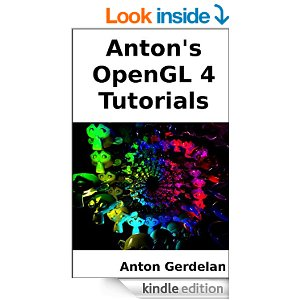
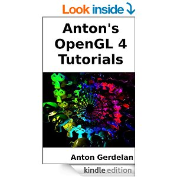

[index]
Anton's OpenGL 4 Tutorials
 

Table of Contents
Introduction
Preface
Downloading and Compiling Demo Source Code
Basics
"Hello Triangle" - OpenGL 4 Up and Running
Extended Initialisation
OpenGL 4 Shaders
Vertex Buffer Objects
Transformation
Vectors and Matrices
Virtual Camera
Quaternion Quick-Start
Ray-Based Picking
Lighting and Texture Maps
Phong Lighting
Texture Maps
Tips and Tricks
Screen Capture
Video Capture
Debugging Shaders
Gamma Correction
Extension Checks and the Debug Callback
Uniform Buffer Objects and Mapping Buffers
Mesh Files
Importing a Mesh File
More Advanced Lighting and Texture Effects
Multi-Texturing
Using Textures for Lighting Coefficients
Fragment Rejection
Alpha Blending for Transparency
Spotlights and Directional Lights
Distance Fog
Normal Mapping
Cube Maps: Sky Boxes and Environment Mapping
New Shader Stages
Geometry Shaders
Tessellation Shaders
2d Rendering
2d GUI Panels
Sprite Sheets and 2d Animation
Bitmap Fonts
Making a Font Atlas Generator Tool
Animation
Particle Systems
Hardware Skinning Part 1: Bones
Hardware Skinning Part 2: Skeleton Hierarchies
Hardware Skinning Part 3: Key-Frame Animation
Multi-Pass Rendering
Switching Framebuffer
Image Processing with a Kernel
Colour-Based Picking
Deferred Shading
Texture Projection Shadows
Discussion
Building Larger Programmes
Closing Remarks, Future Techniques, and Further Reading